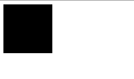
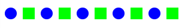

Lab 13 / Part 1 - Basic Canvas
In this lab, you’ll be creating the following programs:
- square
- squarecircle
- customcircle
- five
- alternating
Instructions
ALL OF THESE FILES MUST BE CREATED IN A LAB 13 REPOSITORY THAT YOU CREATE FOR THIS LAB!
- On GitHub, navigate to Prof. Goldford's /lab-13-canvas Template Repository.
- Next, fork and clone it inside your /mtec1003 folder.
- Use you git cheatsheet(s) and the walkthrough(s) from your previous lab(s) as references!
- You may find it particularly time-saving to set up your repositories using the method described in Lab 5 / Part 1.
square
Write a program that draws a square.
- using your text editor (e.g. SublimeText, Atom, VS Code, etc.), create a new file called square.html in your repository directory.
- setup an html file
- add an onload attribute to the body tag to call a function called draw:
<body onload="draw()"> - create a canvas element of at least 300 by 300
<canvas id="sketch" width="300" height="300"> </canvas> - add script tags
- create a draw function within your script tags
function draw() { // your drawing goes here } - start writing your program in your draw function
var sketch = document.getElementById('sketch'); var context = sketch.getContext("2d"); context.fillRect(x, y, width, height); - draw a square of any color other than default black
- the square should be at least 100 pixels wide and 100 pixels high
- use git status, add, commit, and push to save your file in version control and submit it
- example image below

squarecircle
Write a program that draws a square and a circle next to each other.
- using your text editor (e.g. SublimeText, Atom, VS Code, etc.), create a new file called squarecircle.html in your repository directory.
- setup an html file
- create a canvas element of at least 300 by 300
- add an onload attribute to the body tag to call a function called draw
- add script tags
- create a draw function within your script tags
- start writing your program in your draw function
- draw a square of any dimensions of any color other than default black
- draw a circle next to the square of any color other than default black
- use git status, add, commit, and push to save your file in version control and submit it
- example image below

customcircle
Write a program that asks for a number and a color - red, green, or blue. It will draw a circle with that radius and color.
- using your text editor (e.g. SublimeText, Atom, VS Code, etc.), create a new file called customcircle.html in your repository directory.
- setup an html file
- create a canvas element of at least 300 by 300
- add an onload attribute to the body tag to call a function called draw
- add script tags
- create a draw function within your script tags
- start writing your program in your draw function
- the program should ask for a radius: “Enter a radius”
- the program should ask for a color: “Enter a color”
- use the parseInt function to convert input from a string to a number
- use a conditional (if, if-else, or if-else-if) to create a string of the hex color that represents the color entered by the user - red (“#ff0000”), green, or blue
- draw the circle in at the center of your canvas
- (if your canvase is 300 x 300, then the circle should be at 150 x 150)
- the program should use the input to draw a circle with that radius
- use git status, add, commit, and push to save your file in version control and submit it
- example images below


five
Draw five squares using a for loop
- using your text editor (e.g. SublimeText, Atom, VS Code, etc.), create a new file called five.html in your repository directory.
- setup an html file
- create a canvas element of at least 300 by 300
- add an onload attribute to the body tag to call a function called draw
- add script tags
- create a draw function within your script tags
- start writing your program in your draw function
- draw five squares, all adjacent to eachother using a for loop!
- they should be any color other than default black.
- use git status, add, commit, and push to save your file in version control and submit it
- example image below

alternating
Draw a row of circles and squares.
- using your text editor (e.g. SublimeText, Atom, VS Code, etc.), create a new file called alternating.html in your repository directory.
- setup an html file
- create a canvas element of at least 300 by 300
- add an onload attribute to the body tag to call a function called draw
- add script tags
- create a draw function within your script tags
- start writing your program in your draw function
- draw a 10 shapes - 5 circles and 5 squares
- they should be alternating horizontally
- the squares and the circles should be colored differently
- hint: use a conditional for this
- hint: use modulo to switch between circles and squares (% 2 will give back 0 or 1)
- (optional) *ask for a number, draw that many shapes
- use git status, add, commit, and push to save your file in version control and submit it
- example image below
